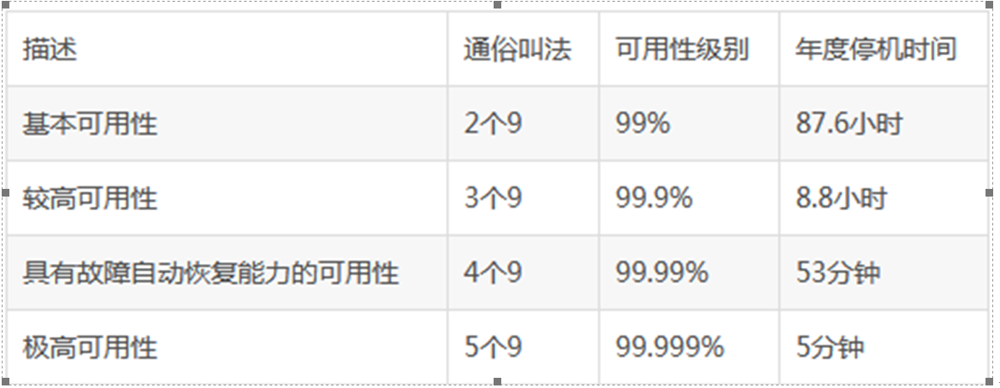
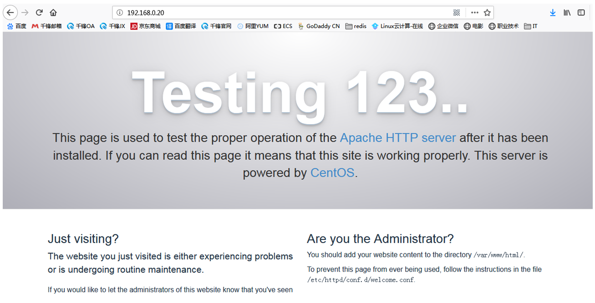

Contents
8.16. keepalived高可用集群¶
8.16.1. 1.1. 高可用集群简介¶
什么是高可用集群¶
高可用集群（High Availability Cluster，简称HA Cluster），是指以减少服务中断时间为目的的服务器集群技术。它通过保护用户的业务程序对外不间断提供的服务，把因软件、硬件、人为造成的故障对业务的影响降低到最小程度。
高可用集群的衡量标准¶
要保证集群服务100%时间永远完全可用，几乎可以说是一件不可能完成的任务。比如，淘宝在这几年双十一刚开始的时候，一下子进来买东西的人很多，访问量大，都出现一些问题，如下单后却支付不了。所以说只能保证服务尽可能的可用，当然有些场景相信还是可能做到100%可用的。
通常用平均无故障时间(MTTF：mean time to failure)来度量系统的可靠性,用平均故障维修时间（MTTR：mean time to restoration）来度量系统的可维护性。于是可用性被定义为：HA=MTTF/(MTTF+MTTR)*100%。

自动切换/故障转移（FailOver）¶
自动切换阶段某一主机如果确认对方故障，则正常主机除继续进行原来的任务，还将依据各种容错备援模式接管预先设定的备援作业程序，并进行后续的程序及服务。
通俗地说，即当A无法为客户服务时，系统能够自动地切换，使B能够及时地顶上继续为客户提供服务，且客户感觉不到这个为他提供服务的对象已经更换。
通过上面判断节点故障后，将高可用集群资源（如VIP、httpd等）从该不具备法定票数的集群节点转移到故障转移域（Failover Domain，可以接收故障资源转移的节点）。
自动侦测¶
自动侦测阶段由主机上的软件通过冗余侦测线，经由复杂的监听程序，逻辑判断，来相互侦测对方运行的情况。
常用的方法是：集群各节点间通过心跳信息判断节点是否出现故障。
脑裂¶
脑裂简介
在高可用（HA）系统中，当联系2个节点的“心跳线”断开时，本来为一整体、动作协调的HA系统，就分裂成为2个独立的个体。由于相互失去了联系，都以为是对方出了故障。两个节点上的HA软件像“裂脑人”一样，争抢“共享资源”、争起“应用服务”，就会发生严重后果——或者共享资源被瓜分、2边“服务”都起不来了；或者2边“服务”都起来了，但同时读写“共享存储”，导致数据损坏（常见如数据库轮询着的联机日志出错）。
脑裂产生的原因¶
因心跳线坏了（包括断了，老化）。
因网卡及相关驱动坏了，ip配置及冲突问题（网卡直连）。
因心跳线间连接的设备故障（网卡及交换机）。
因仲裁的机器出问题（采用仲裁的方案）。
高可用服务器上开启了 iptables防火墙阻挡了心跳消息传输。
高可用服务器上心跳网卡地址等信息配置不正确，导致发送心跳失败。
其他服务配置不当等原因，如心跳方式不同，心跳广插冲突、软件Bug等。
常见的解决方案¶
1）添加冗余的心跳线¶
例如：双线条线（心跳线也HA），尽量减少“裂脑”发生几率；
2）启用磁盘锁¶
正在服务一方锁住共享磁盘，“裂脑”发生时，让对方完全“抢不走”共享磁盘资源。但使用锁磁盘也会有一个不小的问题，如果占用共享盘的一方不主动“解锁”，另一方就永远得不到共享磁盘。现实中假如服务节点突然死机或崩溃，就不可能执行解锁命令。后备节点也就接管不了共享资源和应用服务。于是有人在HA中设计了“智能”锁。即：正在服务的一方只在发现心跳线全部断开（察觉不到对端）时才启用磁盘锁。平时就不上锁了。
3）设置仲裁机制¶
例如设置参考IP（如网关IP或某一个服务器），当心跳线完全断开时，2个节点都各自ping一下参考IP，不通则表明断点就出在本端。不仅“心跳”、还兼对外“服务”的本端网络链路断了，即使启动（或继续）应用服务也没有用了，那就主动放弃竞争，让能够ping通参考IP的一端去起服务。更保险一些，ping不通参考IP的一方干脆就自我重启，以彻底释放有可能还占用着的那些共享资源。
4）裂脑的监控报警¶
如邮件及手机短信等或值班
在问题发生时人为第一时间介入仲裁，降低损失。
当检测到裂脑时强行关闭一个心跳节点（这个功能需特殊设备支持，如Stonith、feyce）。相当于备节点接收不到心跳消患，通过单独的线路发送关机命令关闭主节点的电源。
当然，在实施高可用方案时，要根据业务实际需求确定是否能容忍这样的损失。对于一般的网站常规业务.这个损失是可容忍的。
其他高可用方案¶
heartbeat、pacemaker、 piranha（web页面）
8.16.2. 1.2. keepalived¶
keepalived是什么¶
keepalived是集群管理中保证集群高可用的一个服务软件，用来防止单点故障。
keepalived工作原理¶
keepalived是以VRRP协议为实现基础的，VRRP全称Virtual Router Redundancy Protocol，即虚拟路由冗余协议。
将N台提供相同功能的服务器组成一个服务器组，这个组里面有一个master和多个backup，master上面有一个对外提供服务的vip（该服务器所在局域网内其他机器的默认路由为该vip），master会发组播，当backup收不到vrrp包时就认为master宕掉了，这时就需要根据VRRP的优先级来选举一个backup当master
keepalived主要有三个模块¶
分别是core、check和vrrp。 core模块为keepalived的核心，负责主进程的启动、维护以及全局配置文件的加载和解析。 check负责健康检查，包括常见的各种检查方式。 vrrp模块是来实现VRRP协议的。
8.16.3. 实战案例1¶
server1¶
创建etc下的keepalived目录,编辑配置文件
$ yum -y install keepalived
$ vi /etc/keepalived/keepalived.conf
! Configuration File for keepalived
global_defs {
router_id 1 #设备在组中的标识，设置不一样即可
}
#vrrp_script chk_nginx { #健康检查
# script "/etc/keepalived/ck_ng.sh" #检查脚本
# interval 2 #检查频率.秒
# weight -5 #priority减5
# fall 3 #失败三次
# }
vrrp_instance VI_1 { #VI_1。实例名两台路由器相同。同学们要注意区分。
state MASTER #主或者从状态
interface ens32 #监控网卡
mcast_src_ip 192.168.0.118 #心跳源IP
virtual_router_id 55 #虚拟路由编号，主备要一致。同学们注意区分
priority 100 #优先级
advert_int 1 #心跳间隔
authentication { #秘钥认证(1-8位)
auth_type PASS
auth_pass 123456
}
virtual_ipaddress { #VIP
192.168.0.10/24
}
# track_script { #引用脚本
# chk_nginx
# }
}
# scp -r /etc/keepalived/keepalived.conf 192.168.0.119:/etc/keepalived/
systemctl enable keepalived.service
# 开机启动keepalived
安装Nginx
$ rpm -ivh http://nginx.org/packages/centos/7/noarch/RPMS/nginx-release-centos-7-0.el7.ngx.noarch.rpm
$ yum -y install nginx
$ systemctl enable nginx.service
$ systemctl start nginx.service
$ vi /usr/share/nginx/html/index.html
$ curl -i localhost
$ systemctl start keepalived.service
server2¶
BACKUP服务器的配置需要几处修改
$ yum -y install keepalived
$ vi /etc/keepalived/keepalived.conf
state MASTER改为 state BACKUP
mcast_src_ip 192.168.0.118改为backup服务器实际的IP mcast_src_ip
192.168.0.119
priority 100改为priority 99
配置文件示例
! Configuration File for keepalived
global_defs {
router_id 2
}
#vrrp_script chk_nginx {
# script "/etc/keepalived/ck_ng.sh"
# interval 2
# weight -5
# fall 3
# }
vrrp_instance VI_1 {
state BACKUP
interface ens32
mcast_src_ip 192.168.0.119
virtual_router_id 55
priority 99
advert_int 1
authentication {
auth_type PASS
auth_pass 123456
}
virtual_ipaddress {
192.168.0.10/24
}
# track_script {
# chk_nginx
# }
}
systemctl enable keepalived.service
安装Nginx
$ rpm -ivh http://nginx.org/packages/centos/7/noarch/RPMS/nginx-release-centos-7-0.el7.ngx.noarch.rpm
$ yum -y install nginx
$ systemctl enable nginx.service
$ systemctl start nginx.service
$ vi /usr/share/nginx/html/index.html
$ curl -i localhost
$ systemctl start keepalived.service
client¶
访问VIP http://192.168.0.10
拔掉master的网线。
访问VIP http://192.168.0.10，观察网页已经切换
关于keepalived对nginx状态未知的问题
恢复之前的实验。启动两台主机的keepalived和nginx。确保页面访问正常。
关闭master的nginx服务 。systemctl stop nginx
继续访问VIP，请问页面是否会切换到slave呢？
请思考，nginx服务的状态和keepalived的关系。
原因是keepalived监控的是接口IP状态。无法监控nginx服务状态
编辑监控脚本¶
server1¶
# 添加Nginx监控脚本
vi /etc/keepalived/ck_ng.sh
#!/bin/bash
#检查nginx进程是否存在
counter=$(ps -C nginx --no-heading|wc -l)
if [ "${counter}" = "0" ]; then
#尝试启动一次nginx，停止5秒后再次检测
service nginx start
sleep 5
counter=$(ps -C nginx --no-heading|wc -l)
if [ "${counter}" = "0" ]; then
#如果启动没成功，就杀掉keepalive触发主备切换
service keepalived stop
fi
fi
chmod +x /etc/keepalived/ck_ng.sh
server2¶
# 添加Nginx监控脚本
vi /etc/keepalived/ck_ng.sh
#!/bin/bash
#检查nginx进程是否存在
counter=$(ps -C nginx --no-heading|wc -l)
if [ "${counter}" = "0" ]; then
#尝试启动一次nginx，停止5秒后再次检测
service nginx start
sleep 5
counter=$(ps -C nginx --no-heading|wc -l)
if [ "${counter}" = "0" ]; then
#如果启动没成功，就杀掉keepalive触发主备切换
service keepalived stop
fi
fi
chmod +x /etc/keepalived/ck_ng.sh
8.16.4. 实战案例2¶
环境¶
keepalived+lvs集群
192.168.0.116 dr1 负载均衡器 master
192.168.0.117 dr2 负载均衡器
192.168.0.118 rs1 web1
192.168.0.119 rs2 web2
master¶
1.在master上安装配置Keepalived:
# yum install keepalived ipvsadm -y
ipvsadm安装并不启动
2.在master上修改配置文件
# vim /etc/keepalived/keepalived.conf
! Configuration File for keepalived
global_defs {
router_id Director1 #两边不一样。
}
vrrp_instance VI_1 {
state MASTER #另外一台机器是BACKUP
interface ens32 #心跳网卡
virtual_router_id 51 #虚拟路由编号，主备要一致
priority 150 #优先级
advert_int 1 #检查间隔，单位秒
authentication {
auth_type PASS
auth_pass 1111
}
virtual_ipaddress {
192.168.0.20/24 dev ens32 #VIP和工作端口
}
}
virtual_server 192.168.0.20 80 { #LVS 配置，VIP
delay_loop 3 #服务论询的时间间隔，#每隔3秒检查一次real_server状态
lb_algo rr #LVS 调度算法
lb_kind DR #LVS 集群模式
protocol TCP
real_server 192.168.0.118 80 {
weight 1
TCP_CHECK {
connect_timeout 3 #健康检查方式,连接超时时间
}
}
real_server 192.168.0.119 80 {
weight 1
TCP_CHECK {
connect_timeout 3
}
}
}
backup¶
# 在backup上安装keepalived:
# yum install keepalived ipvsadm -y
ipvsadm安装并不启动
# 拷贝master上的keepalived.conf到backup上：
# scp 192.168.0.116:/etc/keepalived/keepalived.conf 192.168.0.117:/etc/keepalived/
#拷贝后,修改配置文件
router_id Director2
state BACKUP
priority 100
配置示例
! Configuration File for keepalived
global_defs {
router_id Director2
}
vrrp_instance VI_1 {
state BACKUP #另外一台机器是BACKUP
interface ens32 #心跳网卡
virtual_router_id 52
priority 100 #优先级
advert_int 1 #检查间隔，单位秒
authentication {
auth_type PASS
auth_pass 1111
}
virtual_ipaddress {
192.168.0.20/24 dev ens32 #VIP和工作端口
}
}
virtual_server 192.168.0.20 80 { #LVS 配置，VIP
delay_loop 3 #服务论询的时间间隔
lb_algo rr #LVS 调度算法
lb_kind DR #LVS 集群模式
protocol TCP
real_server 192.168.0.118 80 {
weight 1
TCP_CHECK {
connect_timeout 3
}
}
real_server 192.168.0.119 80 {
weight 1
TCP_CHECK {
connect_timeout 3
}
}
}
master和backup上启动服务¶
#systemctl enable keepalived
# systemctl start keepalived
#reboot
web服务器配置¶
web1和web2同配置
安装web测试站点
yum install -y httpd && systemctl start httpd && systemctl enable httpd
netstat -antp | grep httpd
# elinks 127.0.0.1
# 自定义web主页，以便观察负载均衡结果
配置虚拟地址¶
#cp /etc/sysconfig/network-scripts/{ifcfg-lo,ifcfg-lo:0}
\#vim /etc/sysconfig/network-scripts/ifcfg-lo:0
DEVICE=lo:0
IPADDR=192.168.0.20
NETMASK=255.255.255.255
ONBOOT=yes
其他行注释掉
配置路由¶
#vim /etc/rc.local
/sbin/route add -host 192.168.0.20 dev lo:0
在两台机器（RS）上，添加一个路由：route add -host 192.168.0.20 dev lo:0
确保如果请求的目标IP是$VIP，那么让出去的数据包的源地址也显示为$VIP
配置ARP¶
\# vim /etc/sysctl.conf
net.ipv4.conf.all.arp_ignore = 1
net.ipv4.conf.all.arp_announce = 2
net.ipv4.conf.default.arp_ignore = 1
net.ipv4.conf.default.arp_announce = 2
net.ipv4.conf.lo.arp_ignore = 1
net.ipv4.conf.lo.arp_announce = 2
忽略arp请求
可以回复
###### reboot
测试¶
1）观察lvs路由条目¶
# master上 查询
$ ipvsadm -L
IP Virtual Server version 1.2.1 (size=4096)
Prot LocalAddress:Port Scheduler Flags
-> RemoteAddress:Port Forward Weight ActiveConn InActConn
TCP localhost.localdomain:http rr
-> 192.168.0.124:http Route 1 0 0
2）观察vip地址在哪台机器上¶
# master上 查询
$ ip a
ens32:
inet 192.168.0.120/24 brd 192.168.0.255 scope global dynamic ens32
inet 192.168.0.20/32 scope global ens32
3）客户端浏览器访问vip¶

4）关闭master上的keepalived服务，再次访问vip¶
#master上 关闭
$ systemctl stop keepalived.service
8.16.5. 相关参考文献¶
http://www.361way.com/keepalived-framework/5208.html